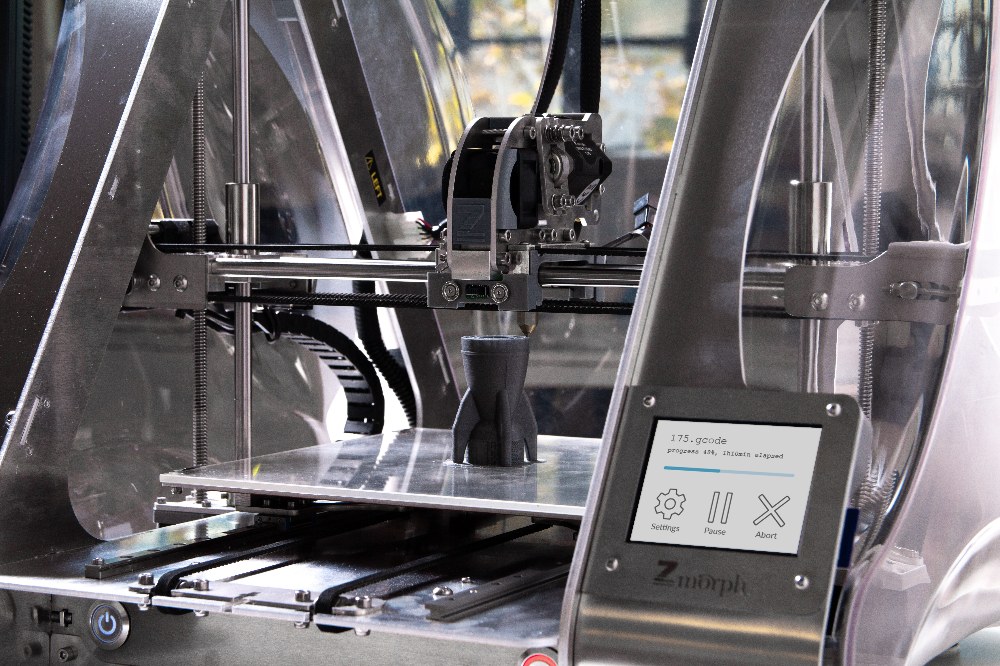
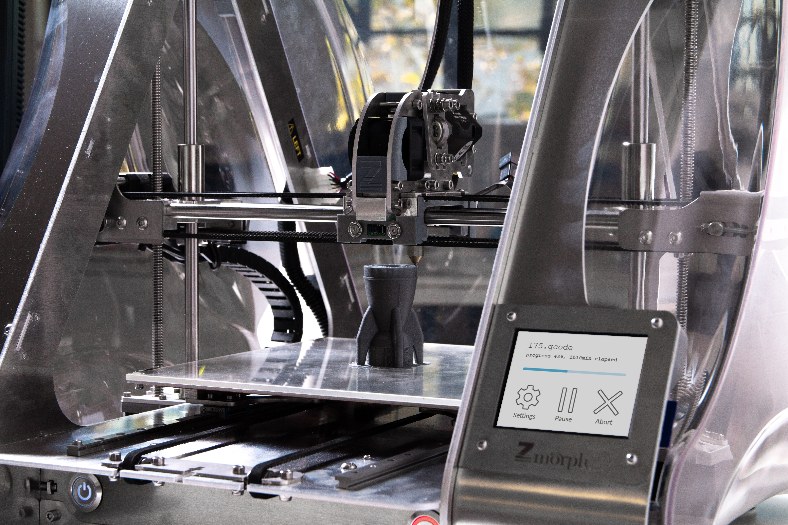

Machines
Machines include electronics that are used in daily life like smartphones, computers,
air conditioning and industrial equipment like gas turbines, construction machines, and even nuclear reactors.
The value of the UK’s machine imports ranks the highest among all its imports.
While the total imports of machines had some ups and downs throughout the years,
the imports from China have steadily increased by 6 billion pounds in two years.
As the result, machine imports from China have taken about 26.43% of the UK’s total machine imports in 2021, making China the biggest import partner of the United Kingdom in this section.
In comparison, China's machine exports to the UK only take less than 3% of its total machine exports.